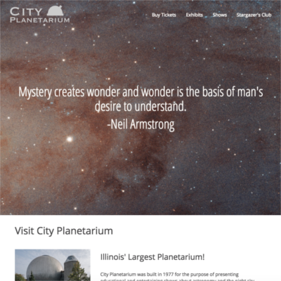

City Planetarium
I created this site because of my desire to learn Twitter's Bootstrap and play around with current web design trends. Here, I play around with parallax scrolling and large image banners on the home page.
This responsive site, for a fictional planetarium, is built on HTML5, CSS, JavaScript, jQuery, and Bootstrap.